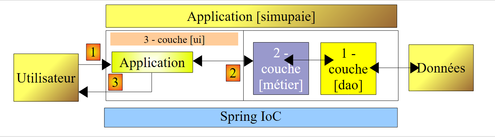

1. Introduction
Le PDF de ce document est disponible |ICI|.
Les exemples de ce document sont disponibles |ICI|.
Nous souhaitons écrire une application .NET permettant à un utilisateur de faire des simulations de calcul de la paie des assistantes maternelles de l'association " Maison de la petite enfance " d'une commune. Nous nous intéresserons autant à l'organisation du code DotNet de l'application qu'au code lui-même.
L'application finale, que nous appellerons [SimuPaie] aura la structure à trois couches suivante :
 |
- la couche [1-dao] (dao=Data Access Object) s'occupera de l'accès aux données. Celles-ci seront placées dans une base de données.
- la couche [2-métier] s'occupera de l'aspect métier de l'application, le calcul de la paie.
- la couche [3-ui] (ui=User Interface) s'occupera de la présentation des données à l'utilisateur et de l'exécution de ses requêtes. Nous appelons [Application] l'ensemble des modules assurant cette fonction. Elle est l'interlocuteur de l'utilisateur.
- les trois couches seront rendues indépendantes grâce à l'utilisation d'interfaces .NET
- l'intégration des différentes couches sera réalisée par Spring IoC
Le traitement d'une demande d'un client se déroule selon les étapes suivantes :
- le client fait une demande à l'application.
- l'application traite cette demande. Pour ce faire, elle peut avoir besoin de l'aide de la couche [métier] qui elle-même peut avoir besoin de la couche [dao] si des données doivent être échangées avec la base de données. L'application reçoit une réponse de la couche [métier].
- selon celle-ci, elle envoie la vue (= la réponse) appropriée au client.
L'interface présentée à l'utilisateur peut avoir diverses formes :
- une application console : dans ce cas, la vue est une suite de lignes de texte.
- une application graphique windows : dans ce cas, la vue est une fenêtre windows
- une application web : dans ce cas, la vue est une page HTML
- ...
Nous écrirons différentes versions de cette application :
- une version ASPNET comportant un unique formulaire et construite avec une architecture à une couche.
- une version identique à la précédente mais avec des extensions Ajax
- une version ASP.NET s'appuyant sur une architecture à trois couches où la couche d'accès aux données est implémentée avec le framework NHibernate. Elle aura toujours l'unique formulaire de la version 1.
- une version 4 ASP.NET multi-vues et mono-page avec l'architecture trois couches de la version 3.
- la partie serveur d'une application client / serveur où le serveur est implémenté par un service web s'appuyant sur l'architecture en couches de la version 3.
- la partie client de l'application client / serveur précédente, implémentée par une couche ASP.NET.
- une version 7 ASP.NET multi-vues et multi-pages avec l'architecture trois couches de la version 3.
- une version 8 ASP.NET multi-vues et multi-pages cliente du service web de la version 5.
- une version 9 ASP.NET multi-vues et multi-pages avec l'architecture trois couches de la version 3 où la couche d'accès aux données est implémentée par des classes de Spring qui facilitent l'utilisation du framework NHibernate.
- une version 10 implémentée en FLEX et cliente du service web de la version 5.
Pré-requis
Dans une échelle [débutant-intermédiaire-avancé], ce document est dans la partie [intermédiaire]. Sa compréhension nécessite divers pré-requis qu'on pourra trouver dans certains des documents que j'ai écrits :
- Programmation ASP.NET [Développement WEB avec ASP.NET 1.1 ] ;
- Langage C# 2008 : [Apprentissage du langage C# Version 3.0 avec le Framework .NET 3.5 ] : classes, interfaces, héritage, polymorphisme
- [Spring IoC], disponible à l'URL [Spring IoC pour .NET ]. Présente les bases de l'inversion de contrôle (Inversion of Control) ou injection de dépendances (Dependency Injection) du framework Spring.Net [http://www.springframework.net].
- [Construction d'une application web à trois couches avec Spring et VB.NET], disponibles à l’URL [Création d'une application web à trois couches avec Spring.NET et VB.NET]. Ce cours présente une application simplifiée d'achats de produits sur le web. Son architecture 3 couches implémente le modèle MVC.
Des conseils de lecture sont parfois donnés au début des paragraphes de ce document. Ils référencent les documents précédents.
Outils
Les outils utilisés dans cette étude de cas sont librement disponibles sur le web. Ce sont les suivants :
- Visual C# 2008, Visual Web Developer Express 2008, SQL Server Express 2005 disponibles à l'URL [http://www.microsoft.com/express/downloads/].
- Spring IoC pour l'instanciation des services nécessaires à l'application, disponible à l'URL [http://www.springframework.net/] - voir également [3]
- NHibernate pour la couche d'accès aux données du SGBD [http://sourceforge.net/projects/nhibernate/]
- NUnit : [http://www.nunit.org] pour les tests unitaires.